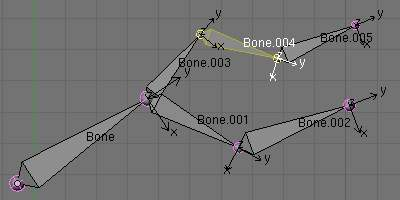

选择¶
参考
You can select and edit bones of armatures in 编辑模式 and in 姿态模式. Here, we will see how to select bones in 编辑模式. 选择 bones in 姿态模式 is similar to selecting in 编辑模式 with a few specific differences that will be detailed in the posing part.
Similar to vertices/edges selection in meshes, there are two ways to select whole bones in 编辑模式:
- directly, by selecting the bone’s body
- selecting both of its end points (root and tip)
This is an important point to understand, because selecting bones’ ends only might lead to non-obvious behavior, with respect to which bone you actually select, see the.
Note that unlike the mesh draw type the armature draw type has no effect on selection behavior. In other words, you can select a bone’s end or body the same way regardless of the bone visualization chosen.
选择 bones’ ends¶
To select bones’ ends you have the standard selection methods.
| action | shortcut | menu | mouse |
|---|---|---|---|
| Select a bone’s end | RMB -click on it |
||
| Add or Remove from the current selection | Shift-RMB |
||
| (De)select the ends of all bones | A |
||
| Invert the current selection | Ctrl-I |
||
| Box selection tool activated | B |
||
| Box selection | Click and drag
LMB the box around the ends you want to add to the current selectionClick and drag
LMB to remove from the current selectionrelease
LMB to validatepress
Esc or click RMB to cancel |
||
| Box selection tool deactivated | B or Esc |
RMB |
|
| Lasso selection | Click and drag
Ctrl-LMB the lasso around the ends you want to add to the current selectionClick and drag
Ctrl-Shift-LMB to remove from the current selectionRelease
LMB to validateHit
Esc or click RMB to cancel |
Inverse selection¶
As stated above, you have to remember that these selection tools are for bones’ ends only, not the bones’ bodies.
For example, the Inverse selection option Ctrl-I
inverts the selection of bones’ ends, not of bones (see Inverse selection).
Remember that a bone is selected only if both its ends are selected. So, when the selection status of bones’ ends is inverted, a new set of bones is selected.

The result of the inverse selection |
{kind=link}
选择 connected bones’ ends¶
Another example is: when you select the root of a bone connected to its parent, you also implicitly select the tip of its parent (and vice versa).
Note
Remember that when selecting bones’ ends, the tip of the parent bone is the “same thing” as the root of its children bones.
选择 Bones¶
By RMB -clicking on a bone’s body, you will select it
(and hence you will implicitly select its root and tip).
To each selected bone corresponds a in the Armature tab. These sub-panels contain settings for some of the bones’ properties (regarding e.g. relationships between bones, bones’ influence on deformed geometry, etc.), as we will see later.
Using Shift-RMB, you can add to/remove from the selection.
You also have some advanced selection options, based on their relations.
You can select at once all the bones in the chain which the active (last selected)
bone belongs to by using the linked selection tool, L.

A single selected bone. |
{kind=link}
{kind=link}
You can deselect the active bone and select its immediate parent or
one of its children using respectively
, [ or
, ].
If you prefer to keep the active bone in the selection,
use , Ctrl-[ or
, Ctrl-].
Deselecting connected bones¶
There is a subtlety regarding connected bones.
When you have several connected bones selected, if you deselect one bone, its tip will be deselected, but not its root, if it is also the tip of another selected bone.
To understand this, look at Fig. :ref`fig-rig-bone-select-deselect`.
After Shift-RMB -clicking “Bone.003”:
- “Bone.003” ‘s tip (which is same as “Bone.004” ‘s root) is deselected
- “Bone” is “Bone.003” ‘s parent. Therefore “Bone.003” ‘s root is same as the tip of “Bone”. Since “Bone” is still selected, its tip is selected. Thus the root of “Bone.003” remains selected.